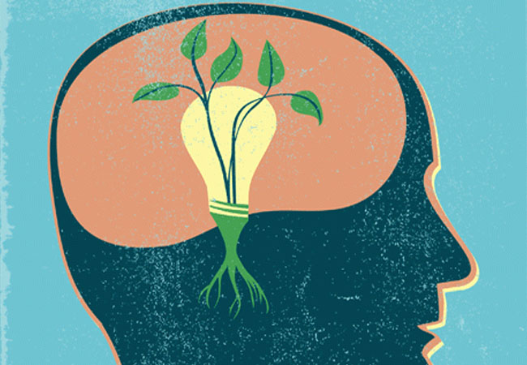

Discuss how understanding the principles of neuroplasticity benefits people.
Brains are extremely malleable and have the ability to change over time with intentional practise.
There is a name for this ability; Neuroplasticity, and it is a very empowering thing to know about.
It means that the way you are now does not have to be permanent, that you can adapt, set new habits,
practise new skills, and with dedication and time you are
able to build new thought patterns and abilities.
Discuss how you might engage with the principles of neuroplasticity for your benefit.
In terms of my own learning journey, I already try to live by the “you can learn anything if you dedicate enough time and energy to it” mindset. But neuroplasticity is a really sobering reminder about the amount of repetition that’s required to actually learn something new. It doesn’t just happen overnight. I find this a very encouraging concept to be aware of, because I still have a lot of doubts in terms of my abilities in maths, logic and problem solving.
What are some of the ways to increase your neuroplasticity?
LOTS OF BRAIN MASSAGE!
For me, the optimal way to increase my neuroplasticity is to step out of
my comfort zone and reinforce this step up with regular practice.
So setting new habits and sticking to them, until they are simply part of a
routine. I will approach my brain as if I’m building a new highway.
It takes time and I may have no knowledge in structural engineering,
but atleast I’m in charge of the project and the potential pay-off outweighs the risks.
extra NEUROPLASTICITY resources:
COOL ANIMATION EXPLANATION
HOW DEPRESSION AFFECTS THE BRAIN
YES, says neuroscientist André Vermeulen.
Growth Mindset
Discuss what it is and why it is relevant.
A growth mindset is about recognising that abilities are things
you can nurture and develop, that they are the direct result of effort and repetition.
The key to learning in a growth mindset is practice practice and more practise.
It is compared to a fixed mindset, which operates on the assumption that people
have innate abilities and talents, and if they fail at something, or
don’t understand it immediately that they aren’t 'naturally' good at it and shouldn’t try.
Growth mindset prioritises development and learning, while fixed mindset prioritises comfort and familiarity.

A growth mindset is relevant for learning in particular,
because it motivates people to keep trying if they don’t understand or know
how to do something. It’s also important in relationships and ones emotional
intelligence, because it helps you to recognise the potential and growth in
others, rather than seeing them and your relationship to them as something
fixed.
Discuss what it is and why it is relevant.
I thought I would be more cynical towards the “growth mindset” material
because it shares traits more wishy washy pop-manifestation practises like “The Secret”,
which can sometimes create a delusional positivity that is devoid of real world barriers.
But both the Growth mindset, and Neuroplasticity material feels more grounded in
educational theory and research, and seems to prioritise making mistakes and equipping
someone to be more resilient, rather than the kind of empty promises of success that self-help
industries pump out.
How will you integrate a growth mindset into your learning journey?
I will adopt more explicit habits in relation to coding concepts and practises. At the moment, along with the course, i’ve been making a more conscious effort to improve my typing, by using resources like typingstudy.com Over the course of this course, I want to set myself conscious challenges to practise the material that are the most difficult for me to understand. At this point, that would be all things javascript haha.
If i’m struggling with something, I will remind myself to approach the problem with curiosity and patience. Stress inhibits clarity and the opportunity to learn. Celebrate my attempts at trying.
Blend with your learning plan and strategies.
Reflect and discuss how these understandings may shape or influence your learning plan and strategy:
As outlined above, I will approach problems and challenges with a curious growth mindset. I will reward my efforts and perseverance rather than my speed of understanding the new material.
I will consciously create habits to practise things I find difficult.
I won’t run away from things that intimidate me, but re-frame that avoidant tendency as a magnetic force that is actually drawing me towards the problem, instead of pushing me away.